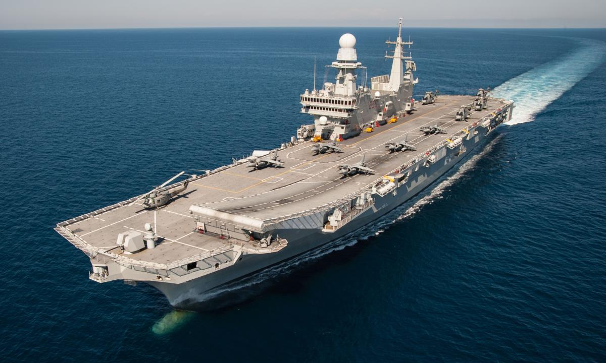
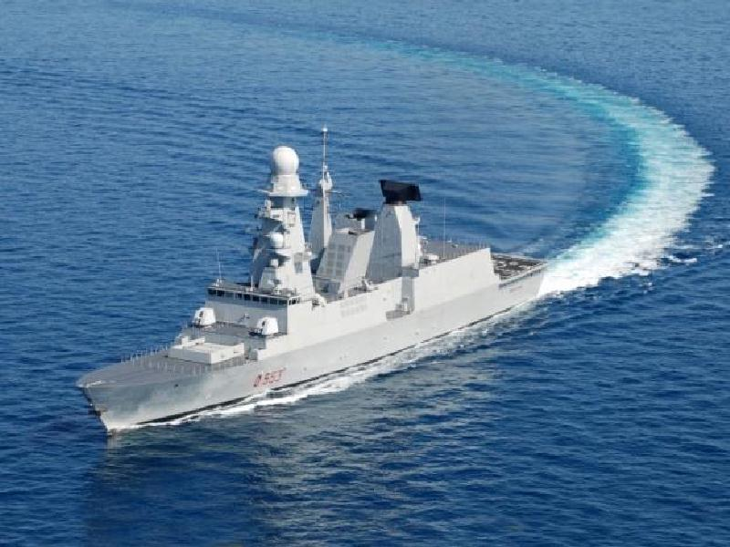
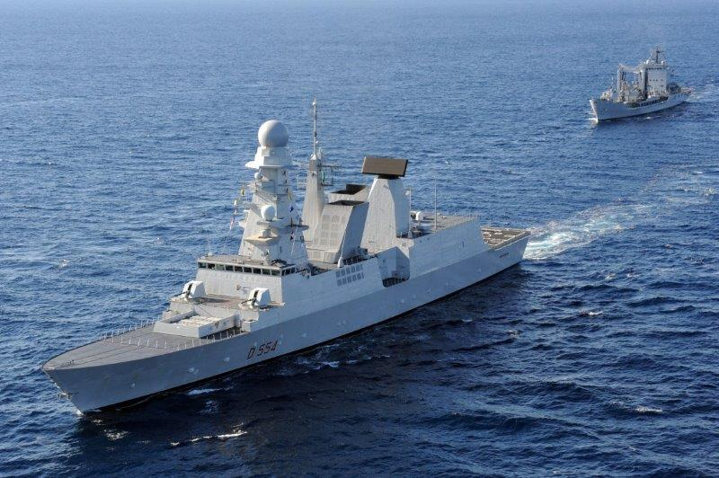
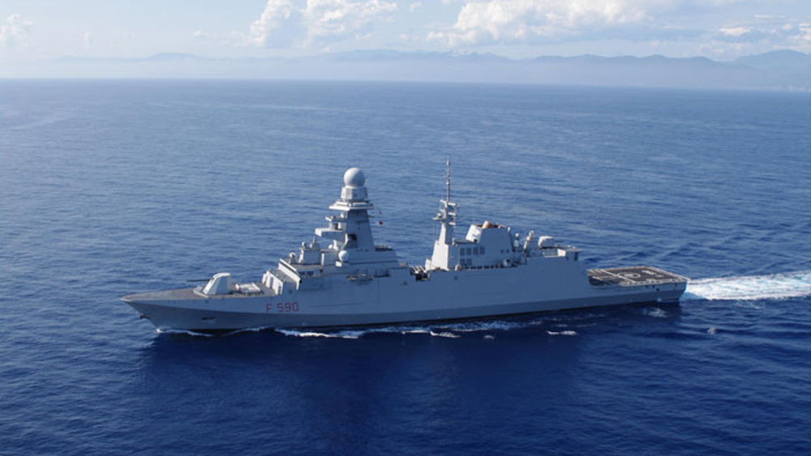

Galleria




Unisciti a una forza d’élite forgiata da dovere e onore. Difendiamo il mare, proteggiamo la Patria e viviamo secondo i valori della Marina Militare.
Unisciti OraLa Marina Militare Italiana è una delle quattro Forze Armate della Repubblica Italiana, parte integrante della Difesa nazionale e strumento di proiezione dello Stato sul mare. Operativa in contesti nazionali e internazionali, la Marina svolge compiti di sicurezza marittima, difesa degli interessi strategici del Paese, controllo e tutela delle acque territoriali e partecipazione a missioni di pace e cooperazione internazionale.
Attraverso uomini, donne, mezzi navali, subacquei e aerei, la Marina Militare garantisce una presenza costante nel Mediterraneo e in altri scenari globali, contribuendo alla salvaguardia della vita umana in mare, alla lotta contro il traffico illecito e alla protezione dell’ambiente marino. Professionalità, tecnologia e tradizione si uniscono in un’organizzazione moderna e dinamica, al servizio dell’Italia e della comunità internazionale.
Assicurare la difesa marittima dell’Italia, salvaguardare gli interessi nazionali sul mare e contribuire alla sicurezza internazionale. La Marina Militare opera per garantire il controllo e la libertà di navigazione, proteggere la vita umana in mare, supportare la cooperazione internazionale e promuovere i valori di disciplina, impegno, professionalità e spirito di servizio.
Costituisce il nucleo operativo principale della Marina Militare. Comprende unità di superficie e subacquee di prima linea, pronte a intervenire in scenari nazionali e internazionali.
Responsabile delle operazioni nel Mediterraneo orientale e centrale. Svolge missioni di pattugliamento, sorveglianza marittima e partecipa a operazioni NATO e UE.
Reparto d'elite delle forze speciali della Marina Militare. Opera in ambienti estremi con compiti di controguerriglia, antiterrorismo e operazioni speciali.
Forza da sbarco della Marina Militare. Specializzata in operazioni anfibie, protezione delle navi, supporto alle operazioni speciali e missioni di peacekeeping.
La Marina Militare Italiana partecipa a numerose operazioni nazionali e internazionali, contribuendo attivamente alla sicurezza marittima, alla stabilità delle aree di crisi e alla tutela degli interessi strategici del Paese. Le missioni operative riflettono l’impegno costante della Forza Armata nel garantire la libertà di navigazione, la protezione delle rotte commerciali e il rispetto del diritto internazionale.
Area: Mediterraneo Centrale
Inizio: Marzo 2023
Personale: 780 unità
Mezzi: 5 unità navali, 2 aeromobili
Operazione di sorveglianza e sicurezza marittima nel Mediterraneo centrale. Gli obiettivi includono la protezione degli interessi nazionali, il contrasto ai traffici illeciti e la salvaguardia della vita umana in mare.
Area: Corno d'Africa e Oceano Indiano
Inizio: Gennaio 2024
Personale: 430 unità
Mezzi: 2 fregate, 1 pattugliatore
Operazione dell'Unione Europea per il contrasto alla pirateria marittima al largo della Somalia e per la protezione delle navi del Programma Alimentare Mondiale che trasportano aiuti umanitari.
Area: Mediterraneo Orientale, Libano
Inizio: Settembre 2023
Personale: 370 unità
Mezzi: 1 fregata, 2 pattugliatori
Componente navale della missione ONU in Libano. Supporta la Marina libanese nel monitoraggio delle acque territoriali, prevenendo l'ingresso di armi non autorizzate e contribuendo alla stabilità regionale.
Area: Mediterraneo
Inizio: Giugno 2025
Personale: 950 unità
Mezzi: 7 unità navali, 3 aeromobili
Grande esercitazione multinazionale per l'addestramento congiunto delle marine militari NATO. Prevede simulazioni di scenari operativi complessi, operazioni di interdizione marittima e procedure di soccorso in mare.
Area: Acque territoriali italiane
Periodo: Gennaio - Dicembre 2024
Personale: 520 unità
Mezzi: 12 motovedette, 3 elicotteri
Operazione di monitoraggio delle acque territoriali italiane per la prevenzione dell'immigrazione illegale, il contrasto ai traffici illeciti e la tutela dell'ambiente marino.
La Marina Militare Italiana segue una struttura gerarchica ben definita che garantisce ordine, efficienza e rispetto della catena di comando. Ogni grado rappresenta un livello di responsabilità e competenza acquisita al servizio della Patria.
La progressione di carriera riflette l'impegno, la dedizione e le capacità dimostrate dal personale durante il servizio. Conoscere i gradi è fondamentale per comprendere la struttura organizzativa e le dinamiche operative della Marina Militare.
Grado elevato della Marina, riservato a ufficiali con lunga esperienza e responsabilità di comando a livello operativo e strategico.
Più alto grado della Marina, conferito in circostanze eccezionali o per incarichi di particolare rilevanza strategica nazionale.
Grado apicale del ruolo ispettori della Marina, assegnato a chi sovrintende funzioni di controllo, coordinamento e alta vigilanza tecnica.
Comanda grandi formazioni navali o ricopre incarichi di alta responsabilità presso i comandi centrali della Marina.
Responsabile di divisioni navali composte da più gruppi tattici o di importanti strutture di comando.
Primo grado degli ammiragli, solitamente al comando di flotte o strutture operative territoriali.
Comanda navi maggiori come portaerei o incrociatori, o dirige importanti servizi di stato maggiore.
Può comandare navi come fregate o cacciatorpediniere o ricoprire incarichi di stato maggiore.
Al comando di unità navali minori o in posizioni di staff in comandi superiori.
Ufficiale superiore della Marina con esperienza consolidata, incaricato spesso del comando di unità navali minori o funzioni di Stato Maggiore.
Può comandare unità navali minori o svolgere funzioni di ufficiale di rotta su navi maggiori.
Ufficiale junior che inizia ad assumere responsabilità settoriali a bordo o a terra.
Primo grado da ufficiale dopo l'Accademia Navale, in fase di formazione sul campo.
Grado iniziale per gli ufficiali in formazione, assegnato a chi ha completato l'iter accademico ma non ha ancora ricevuto il grado effettivo.
Massimo grado per i sottufficiali, ricopre incarichi di alta responsabilità tecnica o gestionale.
Sottufficiale con esperienza pluridecennale in ruoli di supervisione e coordinamento.
Responsabile di divisioni tecniche specializzate o di settori operativi complessi.
Supervisiona settori specialistici con elevata responsabilità tecnico-operativa.
Coordina piccoli team specializzati e gestisce sistemi complessi.
Dirige attività tecniche specializzate con funzioni di supervisione.
Grado avanzato del personale sottufficiale, con compiti di elevata responsabilità tecnica e di coordinamento all’interno dei reparti operativi.
Sottufficiale esperto, spesso incaricato di funzioni di supervisione tecnica e formazione del personale nei contesti operativi navali.
Primo livello dei sottufficiali con responsabilità operative specifiche.
Primo grado del ruolo dei sottufficiali, punto di riferimento per il personale junior e con responsabilità operative nei reparti di base.
Grado apicale tra i sottocapi, ricopre incarichi tecnici e funzioni di supporto alla leadership nei reparti specializzati della Marina.
Sottufficiale con esperienza, svolge ruoli di affiancamento alla gestione delle attività operative e del personale tecnico.
Militare specializzato con competenze consolidate, partecipa attivamente alle operazioni tecniche e logistiche a bordo o a terra.
Personale inquadrato nei ruoli intermedi della Marina, con compiti operativi e mansioni di supporto tecnico e amministrativo.
Grado iniziale dei sottocapi, partecipa alle attività operative sotto la guida del personale più esperto e con compiti tecnici di base.
Militare di truppa con comprovata esperienza, impiegato in attività operative e logistiche con grado di autonomia crescente.
Grado base del personale di truppa, svolge compiti esecutivi e di supporto sotto la supervisione dei gradi superiori.
Periodo minimo di permanenza nel grado precedente prima di poter avanzare al grado successivo.
Giudizi positivi nelle note caratteristiche e valutazione del rendimento da parte dei superiori.
Superamento di corsi specifici, esami e acquisizione di qualifiche tecniche o operative richieste.
Imbarchi, missioni e operazioni completate con successo, con particolare attenzione al comando e alla gestione.
Risposte alle domande più comuni sulla Marina Militare IRP
Per entrare nella Marina Militare IRP è necessario compilare il modulo di arruolamento disponibile sul nostro server Discord. Successivamente sarai contattato per un colloquio iniziale e, in caso di esito positivo, inizierai il periodo di addestramento base (CAR - Corso Allievi Reclute).
I requisiti fondamentali sono:
Gli addestramenti si svolgono regolarmente il martedì, giovedì e sabato dalle 21:00 alle 23:00 CET. Occasionalmente vengono organizzate esercitazioni speciali e missioni in altri giorni, che vengono comunicate con anticipo attraverso il nostro server Discord.
All'interno della Marina Militare IRP puoi specializzarti in diversi ambiti:
La scelta della specializzazione avviene dopo il completamento del CAR e dipende sia dalle preferenze personali che dalle valutazioni dei superiori.
No, non è necessaria alcuna esperienza precedente. Il nostro Corso Allievi Reclute è progettato per insegnare tutte le conoscenze necessarie partendo da zero. L'importante è la volontà di imparare, il rispetto delle gerarchie e la partecipazione costante.
La progressione di carriera all'interno della Marina Militare IRP avviene attraverso:
Gli avanzamenti di grado vengono proposti dai superiori diretti e confermati dal Comando.